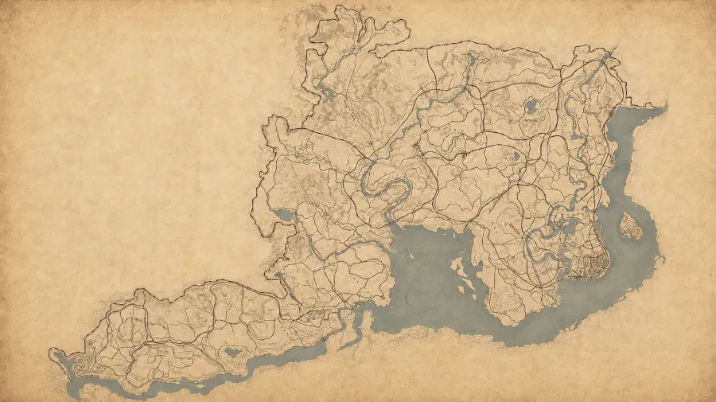

Hvad sker der lige nu?
De fire knapper styrer hele forsiden. Vælg den der passer — det slår igennem med det samme.
Står på bålet som “Marcel forventes vågen ca. …”. Lad det stå tomt, hvis I ikke ved det.
Dagens rutine
En huskeliste til hver dag under eventet. Den nulstiller sig selv ved midnat.
Historien
Tællere
Ét tryk er nok. Tallene står i lejrstatus og i OBS-overlayet.
Honour
Aflæs den i spillet og skriv den ind. Vi viser aldrig et tal, I ikke har målt.
Hesten
Morgenavisen
Udgives typisk om morgenen, når Marcel vågner. Du udfylder felterne — siden sætter avisen op selv.
Citater
Sæt ét som dagens citat — så står det stort på forsiden og i radioen i et døgn.
Kort nyhed
En enkelt linje til “Seneste depecher” på forsiden.
Ny journalside
Den lange version — en hel opslået side i bogen.
Indbakke
Intet herfra vises på siden, før du trykker Godkend. Husk at siden kan blive vist på stream.
Dusører
Udfordringer til Marcel. Hold jer til tre aktive ad gangen — ellers når I aldrig i mål.
Dagens dom
Ét spørgsmål ad gangen. Afgør det på stream dagen efter.
Forudsigelser
Åbnes typisk før et nyt kapitel. Skriv det rigtige svar ind bagefter — så får seerne point.
Hvor er I nået til?
Tryk på en prik på kortet — eller på knappen i listen. Det er det samme flag. Kortet her er præcis det, publikum ser på forsiden, bortset fra at du altid kan se alle ankre.

Ingen flag sat endnu. Det første sættes, når banden rider ud.
Hvad er der sket?
Tidslinjen på forsiden er fuld af gæt, indtil du bekræfter dem. Tryk “Det skete nu”, når noget faktisk sker — så bliver markeringen udfyldt og flytter sig hen til det rigtige tidspunkt. Gæt vises stiplet, så ingen tror det er en aftale med Marcel.
Lejrene
Listen i “Trail Log” på forsiden.
Kirkegården
Hver gang det går galt, rejser vi en sten. Dødstælleren følger automatisk med.
Indsamlingen
Står på forsiden som “I har doneret … Det har forlænget uret med 0 sekunder.”
Gæster
Overlays til OBS
Tilføj hver af dem som en Browser Source i OBS. Baggrunden er gennemsigtig, og de opdaterer sig selv.
Skift adgangskode
Tidligere versioner
Hver gang noget gemmes, lægger vi den forrige version til side. Her kan du gå tilbage.
For viderekomne
Rediger alle data direkte
Kun hvis du ved hvad du laver. En tastefejl her kan slette indhold. Brug hellere felterne på de andre faner.